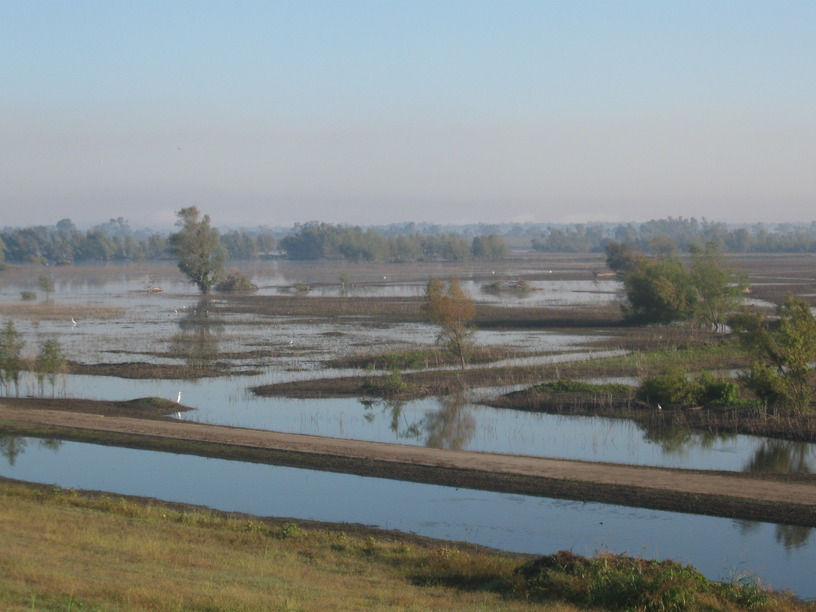

26 Oct 2008, Ville Platte, LA
I rode over 105 miles today! That's a personal best! It helps that this part of LA is flat as a pancake. Of course, I did have some headwinds.
Other than my mileage, there's not much interesting to write about. Tomorrow I'm taking a rest day—at least as long as it takes to get through my to-do list.
